Grêmio
Clube atual
47 jogos · 12 gols
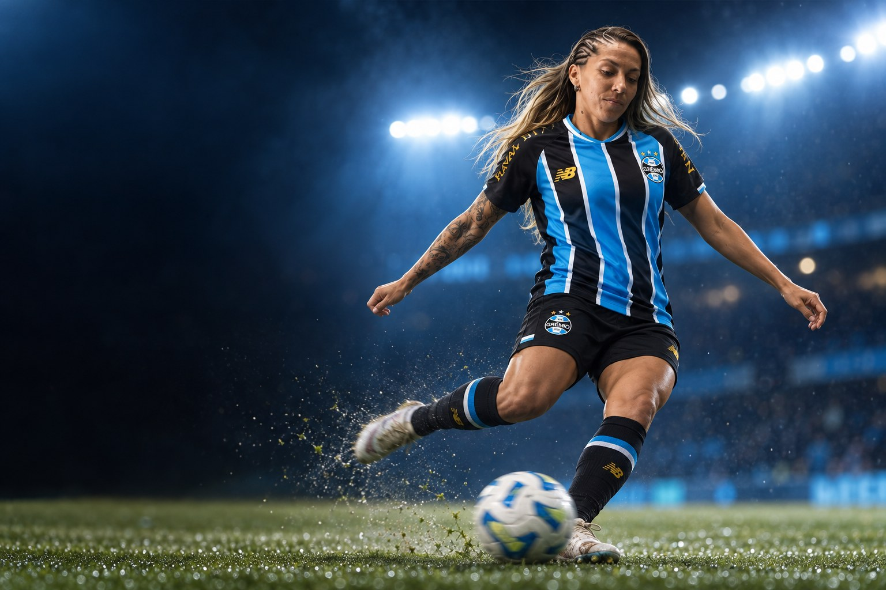
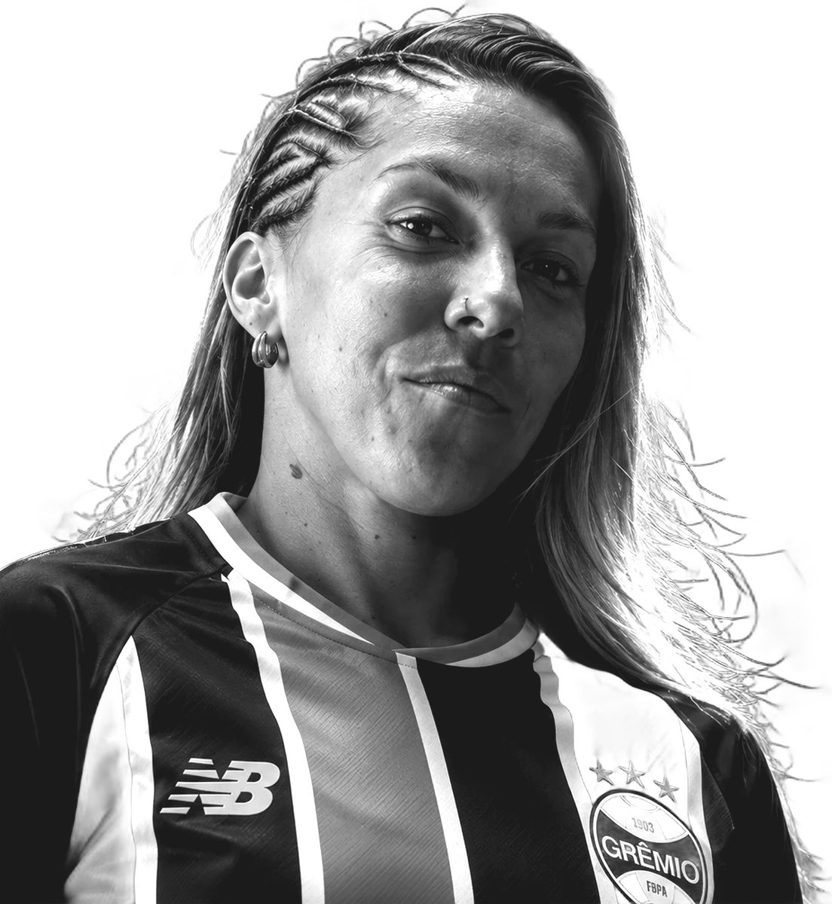
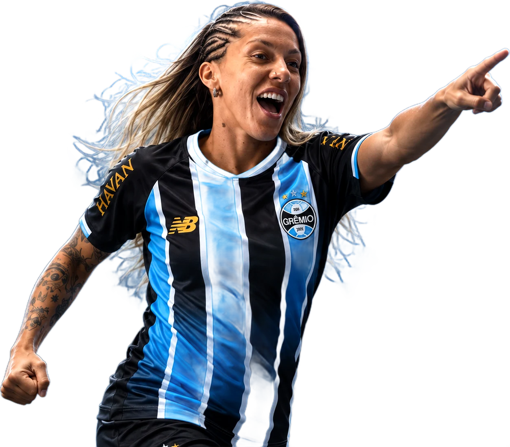
Futebolista profissional · Meia / Volante
Camila Pini Caldas Manchin
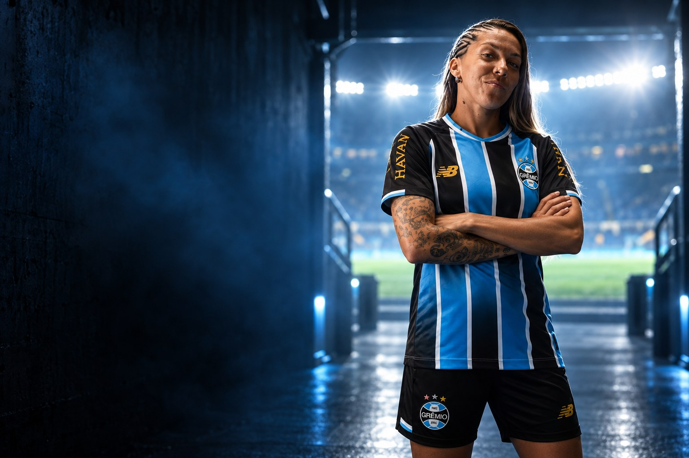
Sobre
Camila Pini Caldas Manchin é futebolista profissional e atua como meia ofensivo. Clube atual: Grêmio.
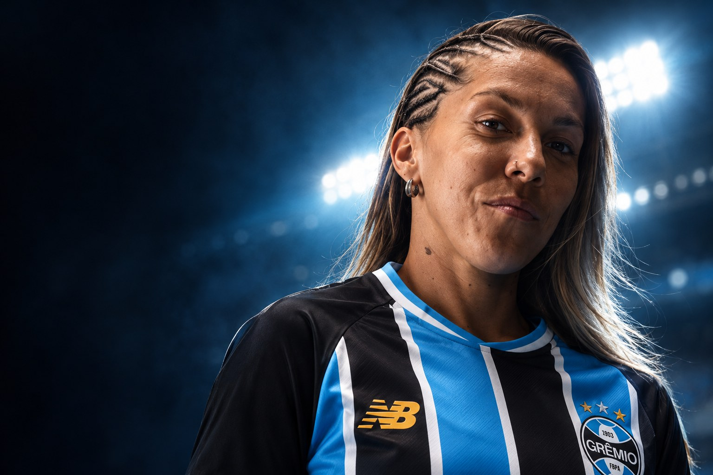
“Acho que como uma meia, ajudo muito mais as atacantes a terem boas condições de gol, mas também gosto de deixar os meus golzinhos.”Camila Pini, à GrêmioTV, em entrevista exclusiva publicada pelo Grêmio em fevereiro de 2025
Perfil
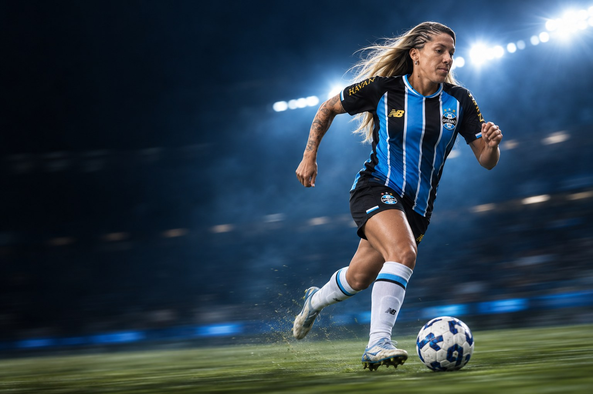
Carreira em números
Carreira
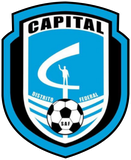
2014Capital CFClubes em destaque
47 jogos · 12 gols
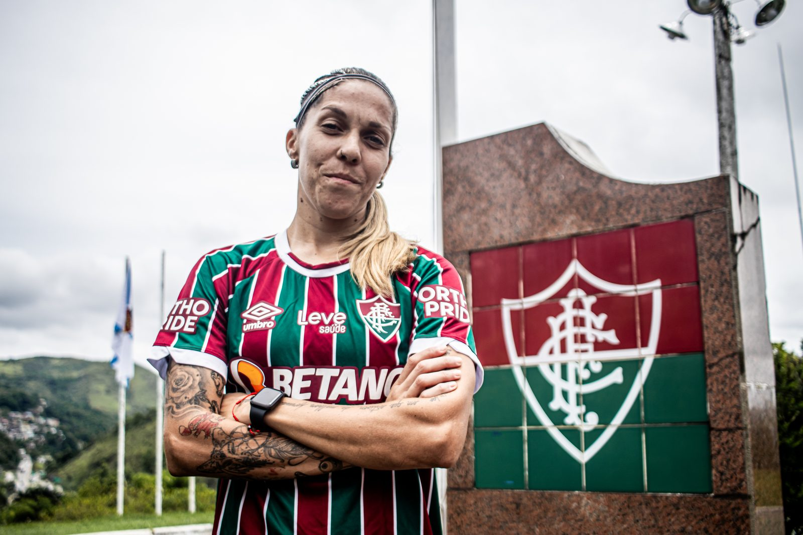

20 jogos · 1 gols
Conquistas
Galeria
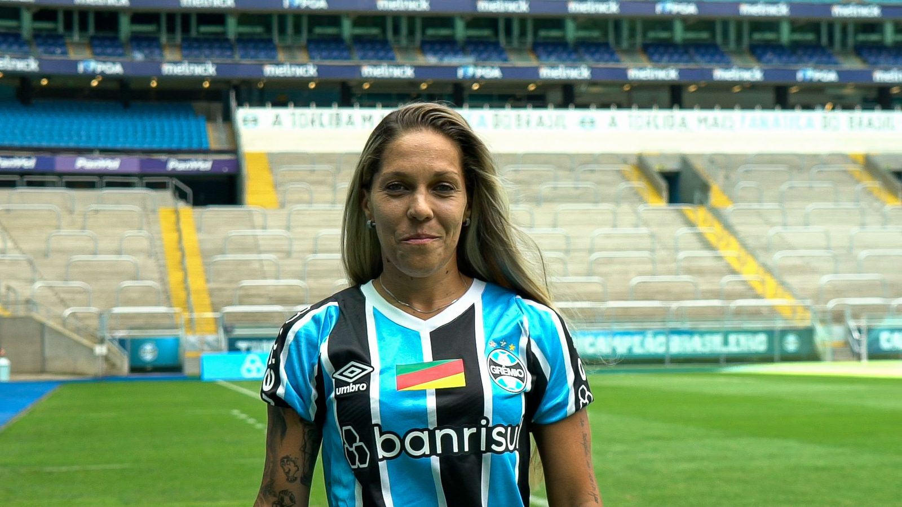
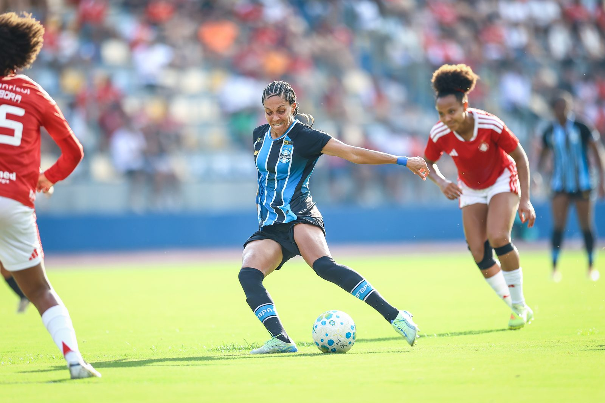
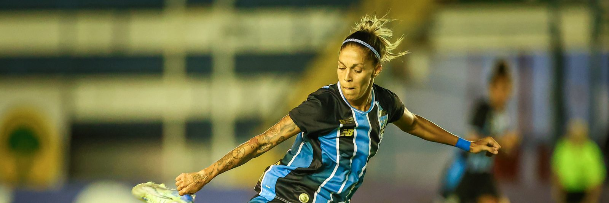
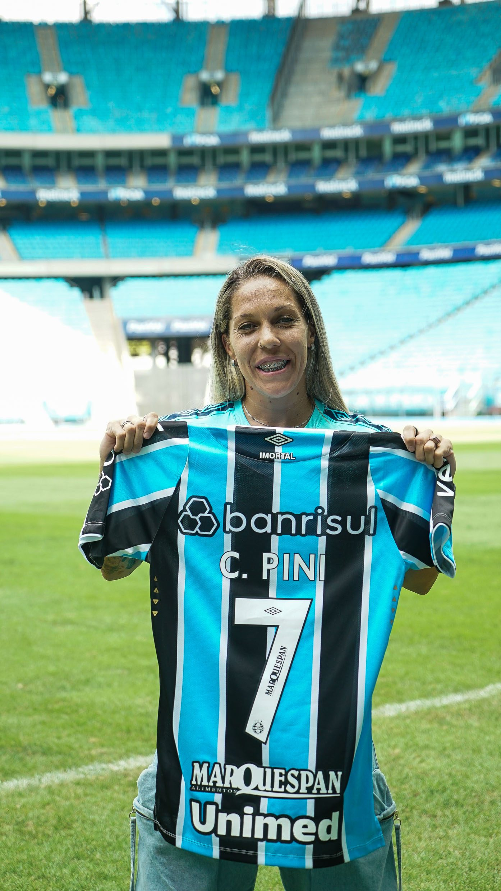
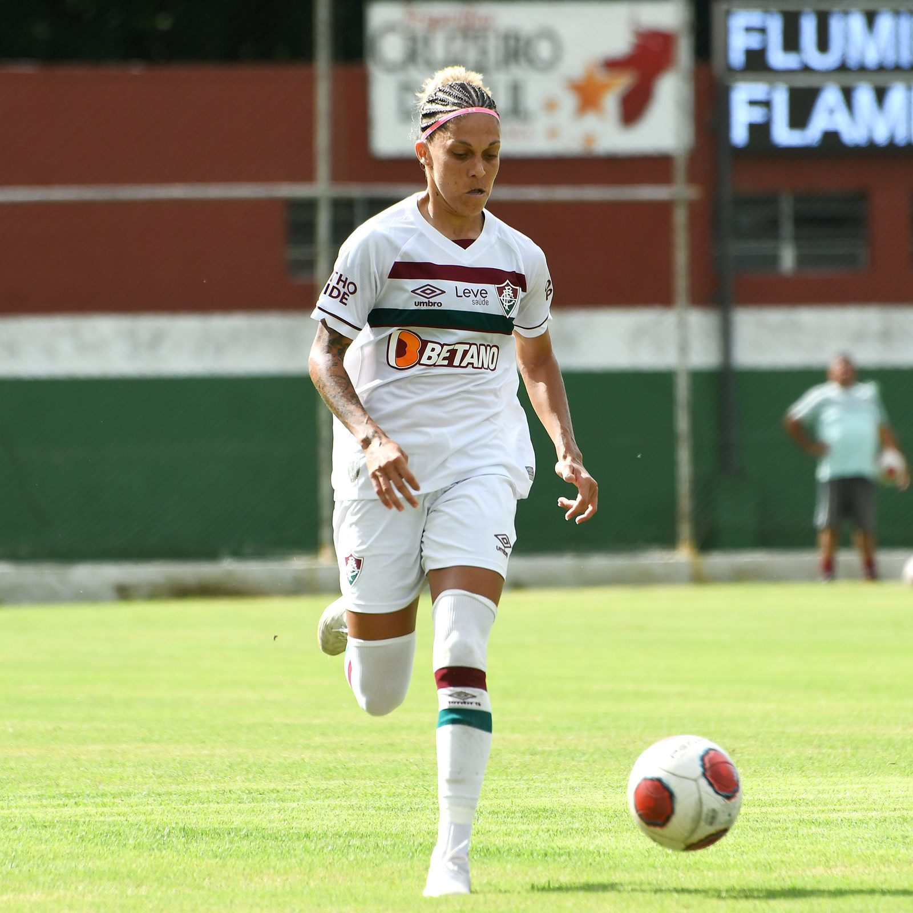
Currículo esportivo
| Temporada | Clube | País | Jogos | Gols | Assistências |
|---|---|---|---|---|---|
| 2026 | 23 | 6 | 3 | ||
| 2025 | 24 | 6 | 1 | ||
| 2024 | 20 | 1 | 0 | ||
| 2023 | Athletico Paranaense | 14 | 0 | 1 | |
| 2022 | 11 | 0 | 0 | ||
| 2021 | 15 | 3 | 1 | ||
| 2020 | 10 | 0 | 0 | ||
| 2019 | Minas Icesp | 13 | 3 | 0 | |
| 2018 | Minas Icesp | 3 | 1 | 0 | |
| 2017 | Minas Icesp | – | – | – | |
| 2016 | Minas Icesp | – | – | – | |
| 2014 | Capital CF | 2 | 0 | 0 | |
| 2013 | Cresspom | 2 | 0 | 0 | |
| 2013 | ASCOOP-DF | 4 | 0 | 0 | |
| 2012 | Atlético-MG | 3 | 0 | 0 | |
| 2008 | Juventus-SP | – | – | – |
Jogos, gols e assistências conforme a base estatística Ogol. O clube atual segue o anúncio oficial do clube.
Na mídia
Contato profissional
Assuntos profissionais, comerciais e de carreira: fale pelo perfil oficial da atleta.
Mídia kit
International profile